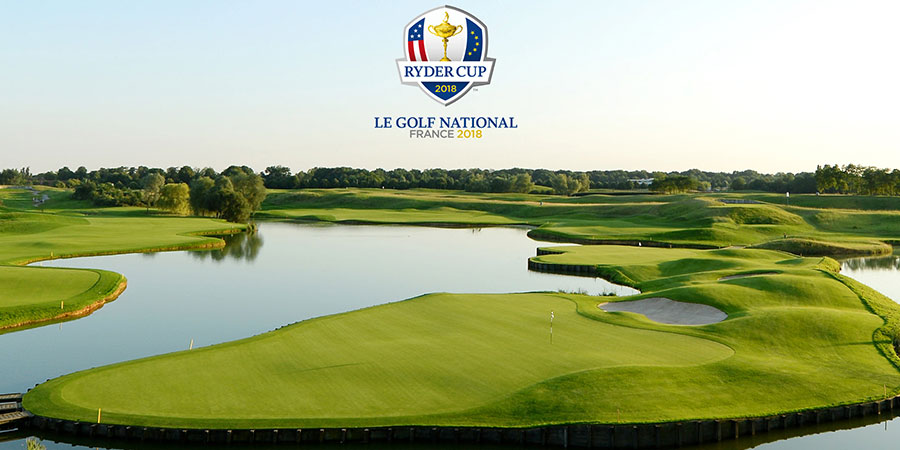
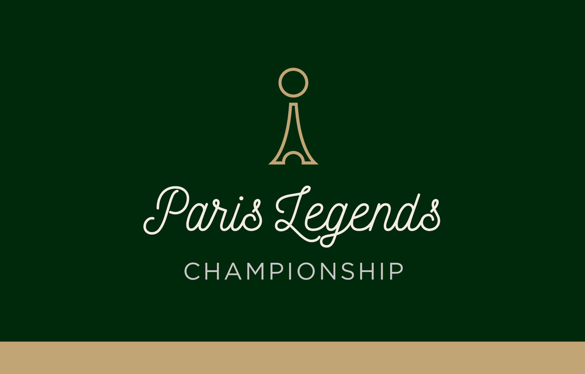

Le week-end du 27 au 30 septembre a eu lieu la Ryder Cup à Paris. De très grands golfeurs étaient présents comme Justin Thomas, Rory McIlroy, Phil Mickelson ou encore le très célèbre Tiger Woods. Cette année la Ryder Cup a ete gagnée par une équipe européenne, la compétition se déroulait dans les Yvelines.

La 3e édition du Paris Legends Championship, qui se tient du 9 au 13 octobre 2018 sur le mythique Golf de La Boulie, au Racing Club de France près de Versailles, se disputera sans Thomas Levet. Le Français, qui devait être l'attraction de ce tournoi du Tour européen des plus de 50 ans, a été contraint de déclarer forfait, blessé aux côtes.
Jean Van de Velde, Roger Sabarros, Marc Farry, Jean-François Remésy et Jean-Pierre Sallat compléteront le champ de joueurs français présent pour ce Paris Legends Championship 2018, qui se tiendra du 9 au 13 Octobre 2018 après avoir disputé ses deux premières éditions au Golf National à Saint-Quentin-en-Yvelines.
Les organisateurs ont ainsi décidé de se tourner vers ce parcours historique de « La Vallée », qui lui aussi, a connu des années grandioses. Ce lieu chargé d’histoire ne laissera pas les 54 joueurs de l’épreuve indifférents. Eux, qui ont connu l’Open De France ou encore le Tournoi Perrier de Paris. Ils se disputeront un price-money de 250 000 euros pendant 3 tours, l’occasion pour le public de venir les soutenir sans conditions ! L’entrée est gratuite pour tous ; grands et petits pourront suivre des personnalités telles que Barry Lane, Jean Van de Velde, Phil Golding, Costantino Rocca ou encore Ian Woosnam sur ces fairways proche de Paris.